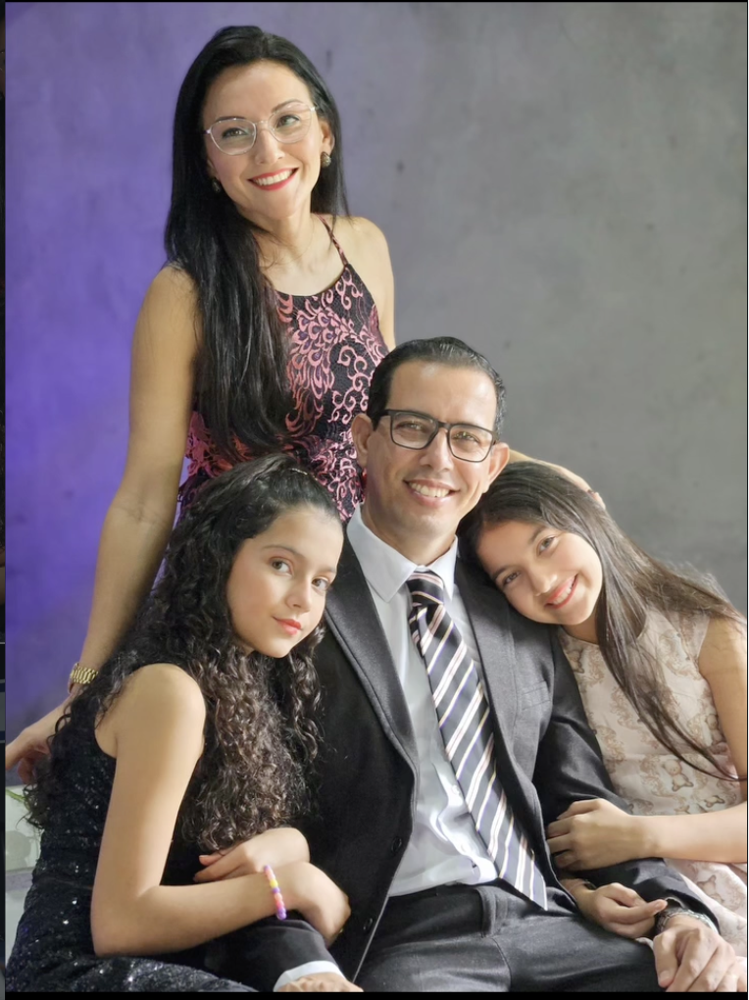

Conhecer a Palavra para servir com excelência
O Seminário SDC Bahia oferece formação bíblica e teológica para quem deseja crescer no conhecimento de Deus e servir à igreja e ao próximo.
[Texto provisório – substituir pelo texto institucional oficial]

FAZENDO
DISCÍPULOS
Em 2013, o Pr. Elias Araújo chegou a Salvador – BA com a visão de fazer discípulos e preparar homens e mulheres para a obra de Deus.
Após estudar em Guarapari – ES e realizar estágio em Curitiba – PR, iniciou, em 2013, o Seminário SDC Bahia, com o propósito de formar pessoas comprometidas com o Evangelho.
Desde então, o seminário busca ser uma ferramenta nas mãos de Deus, preparando homens e mulheres para levar o nome de Jesus Cristo a todos os povos.
Nossa comunidade
Professores, famílias e alunos unidos na formação e no serviço cristão.
Sobre o Seminário
Conheça um pouco de quem somos e do que acreditamos.
Nossos diferenciais
Formação bíblica e teológica para crescer no conhecimento e servir com propósito.
Venha conhecer o Seminário SDC Teologia
Tem dúvidas ou quer saber mais? Escreva para nós, teremos prazer em responder.
Fale pelo WhatsApp